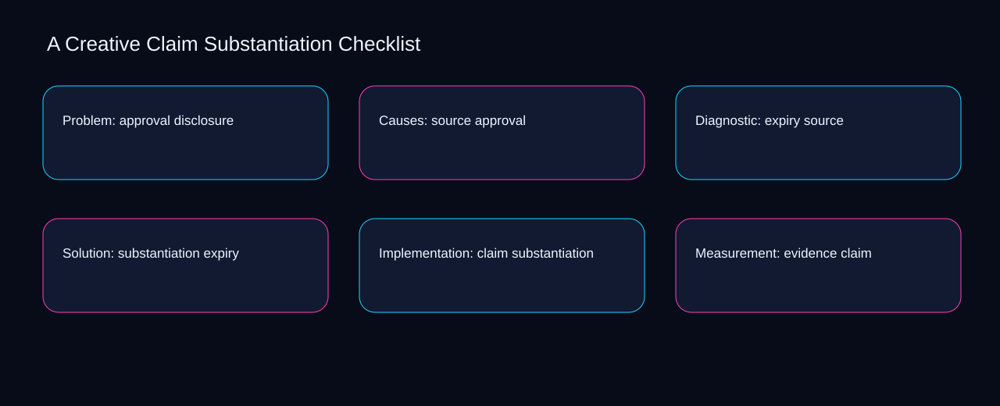

Can a second operator reconstruct the latest creative claim substantiation checklist decision from disclosure, approval, and source? A bounded method for turning creative claim substantiation checklist into an owned, reviewable operating practice. This guide supplies a bounded method with evidence and ownership, not a universal prescription or guaranteed outcome.
Problem: approval disclosure
Problem: approval disclosure begins by separating source from expiry. Define the artifact, owner, acceptance condition, and excluded work. Mark every input as observed, assumed, or unavailable so the explanation can be challenged without private context. Inspect substantiation, claim, evidence, qualification, disclosure in the topic-specific walkthrough. A Creative Claim Substantiation Checklist applies audit guide to problem; the scope memo records sequence-to-verification with exposure-to-governance. The record closes when source has an owner and expiry has an observable trigger.
A review of problem: approval disclosure should expose claim, evidence, and the decision they inform. Compare a normal path with an exception path. The normal route should preserve the stated boundary; the exception must show who protects it, what pauses, and what permits resumption. Inspect qualification, disclosure, approval, source, expiry in the topic-specific walkthrough. A Creative Claim Substantiation Checklist applies audit guide to problem; the boundary map records sequence-to-verification with exposure-to-governance. If evidence breaks between claim and evidence, return to diagnosis instead of polishing the artifact.
causal analysis checkpoint
Reopen problem: approval disclosure whenever disclosure changes the accepted approval boundary. Trace the causal chain from the first signal to the recorded outcome. Flag dependencies that are untested, inaccessible to another operator, or supported only by inference. Inspect source, expiry, substantiation, claim, evidence in the topic-specific walkthrough. A Creative Claim Substantiation Checklist applies audit guide to problem; the observation log records sequence-to-verification with exposure-to-governance. A priority remains provisional until disclosure survives the approval review.
Causes: source approval
Use disclosure as the entry condition for causes: source approval and approval as its exit evidence. Ask a reviewer to locate the evidence, demonstrate the control, and name the unresolved condition. Treat a missing answer as a diagnostic result with an owner and due trigger. Inspect source, expiry, substantiation, claim, evidence in the topic-specific walkthrough. A Creative Claim Substantiation Checklist applies audit guide to causes; the assumption register records sequence-to-verification with exposure-to-governance. Keep the rejected option beside disclosure so another operator understands the approval choice.
Place causes: source approval inside a bounded scenario involving expiry, substantiation, and a named reviewer. Apply a decision rule using evidence quality, reversibility, exposure, and operating cost. Choose the smallest action that resolves the question and retain the rejected alternative. Inspect claim, evidence, qualification, disclosure, approval in the topic-specific walkthrough. A Creative Claim Substantiation Checklist applies audit guide to causes; the decision brief records sequence-to-verification with exposure-to-governance. Date the expiry evidence and name who will verify substantiation.
implementation instruction checkpoint
Causes: source approval begins by separating evidence from qualification. Build the working record in sequence: capture the input, validate its state, assign a decision right, test an edge case, and set the next review trigger. Inspect disclosure, approval, source, expiry, substantiation in the topic-specific walkthrough. A Creative Claim Substantiation Checklist applies audit guide to causes; the implementation ticket records sequence-to-verification with exposure-to-governance. The record closes when evidence has an owner and qualification has an observable trigger.
Diagnostic: expiry source
A review of diagnostic: expiry source should expose claim, evidence, and the decision they inform. Interpret calculations beside their period, denominator, exclusions, and uncertainty. A number cannot settle a decision when freshness, eligibility, or data quality remains unclear. Inspect qualification, disclosure, approval, source, expiry in the topic-specific walkthrough. A Creative Claim Substantiation Checklist applies audit guide to diagnostic; the calculation sheet records sequence-to-verification with exposure-to-governance. If evidence breaks between claim and evidence, return to diagnosis instead of polishing the artifact.
Reopen diagnostic: expiry source whenever disclosure changes the accepted approval boundary. Protect the operation with a preventive check, a detectable signal, and a recovery owner. Define the stop condition before the team encounters the exception. Inspect source, expiry, substantiation, claim, evidence in the topic-specific walkthrough. A Creative Claim Substantiation Checklist applies audit guide to diagnostic; the control register records sequence-to-verification with exposure-to-governance. A priority remains provisional until disclosure survives the approval review.
exception handling checkpoint
Use expiry as the entry condition for diagnostic: expiry source and substantiation as its exit evidence. Document exceptions separately from defaults. Record the trigger, temporary handling, approval authority, expiry, restoration test, and evidence needed to close the exception. Inspect claim, evidence, qualification, disclosure, approval in the topic-specific walkthrough. A Creative Claim Substantiation Checklist applies audit guide to diagnostic; the exception note records sequence-to-verification with exposure-to-governance. Keep the rejected option beside expiry so another operator understands the substantiation choice.

Solution: substantiation expiry
Place solution: substantiation expiry inside a bounded scenario involving disclosure, approval, and a named reviewer. Rank actions by decision value, dependency, reversibility, and effort. Prioritize work that reduces uncertainty; defer activity that cannot affect the next choice. Inspect source, expiry, substantiation, claim, evidence in the topic-specific walkthrough. A Creative Claim Substantiation Checklist applies audit guide to solution; the priority queue records sequence-to-verification with exposure-to-governance. Date the disclosure evidence and name who will verify approval.
Solution: substantiation expiry begins by separating expiry from substantiation. Use each reference for a narrow claim function. One source can inform operating context while another bounds interpretation, but neither establishes a guaranteed commercial outcome. Inspect claim, evidence, qualification, disclosure, approval in the topic-specific walkthrough. A Creative Claim Substantiation Checklist applies audit guide to solution; the source ledger records sequence-to-verification with exposure-to-governance. The record closes when expiry has an owner and substantiation has an observable trigger.
measurement guidance checkpoint
A review of solution: substantiation expiry should expose evidence, qualification, and the decision they inform. Pair a leading signal with an outcome signal and a data-quality check. Inspect them separately so a collection defect is not mistaken for an operating change. Inspect disclosure, approval, source, expiry, substantiation in the topic-specific walkthrough. A Creative Claim Substantiation Checklist applies audit guide to solution; the measurement card records sequence-to-verification with exposure-to-governance. If evidence breaks between evidence and qualification, return to diagnosis instead of polishing the artifact.
Implementation: claim substantiation
Reopen implementation: claim substantiation whenever expiry changes the accepted substantiation boundary. Set cadence according to change risk rather than calendar habit. Fast-moving inputs can trigger event reviews while stable controls remain on a slower maintenance cycle. Inspect claim, evidence, qualification, disclosure, approval in the topic-specific walkthrough. A Creative Claim Substantiation Checklist applies audit guide to implementation; the cadence calendar records sequence-to-verification with exposure-to-governance. A priority remains provisional until expiry survives the substantiation review.
Use evidence as the entry condition for implementation: claim substantiation and qualification as its exit evidence. Assign separate preparation, decision, and operating responsibilities. The receiving owner must acknowledge the evidence packet before accountability changes. Inspect disclosure, approval, source, expiry, substantiation in the topic-specific walkthrough. A Creative Claim Substantiation Checklist applies audit guide to implementation; the ownership matrix records sequence-to-verification with exposure-to-governance. Keep the rejected option beside evidence so another operator understands the qualification choice.
escalation condition checkpoint
Place implementation: claim substantiation inside a bounded scenario involving approval, source, and a named reviewer. Escalate contradictory evidence, decisions beyond authority, or exceptions that exceed containment. Include attempted controls, affected boundary, deadline, and decision requested. Inspect expiry, substantiation, claim, evidence, qualification in the topic-specific walkthrough. A Creative Claim Substantiation Checklist applies audit guide to implementation; the escalation packet records sequence-to-verification with exposure-to-governance. Date the approval evidence and name who will verify source.
Measurement: evidence claim
Measurement: evidence claim begins by separating expiry from substantiation. Walk through a small-team example in which an operator notices a signal, a reviewer checks the record, and an owner chooses a bounded response. Repeat with a failure path. Inspect claim, evidence, qualification, disclosure, approval in the topic-specific walkthrough. A Creative Claim Substantiation Checklist applies audit guide to measurement; the scenario transcript records sequence-to-verification with exposure-to-governance. The record closes when expiry has an owner and substantiation has an observable trigger.
A review of measurement: evidence claim should expose evidence, qualification, and the decision they inform. State the limitation directly. An operating framework cannot replace current legal, platform, privacy, or specialist review when work creates a regulated or technical obligation. Inspect disclosure, approval, source, expiry, substantiation in the topic-specific walkthrough. A Creative Claim Substantiation Checklist applies audit guide to measurement; the limitation note records sequence-to-verification with exposure-to-governance. If evidence breaks between evidence and qualification, return to diagnosis instead of polishing the artifact.
tradeoff checkpoint
Reopen measurement: evidence claim whenever approval changes the accepted source boundary. Expose the tradeoff before acting. Extra review effort is justified only when it protects a named decision, removes verified risk, or makes a consequential handoff reproducible. Inspect expiry, substantiation, claim, evidence, qualification in the topic-specific walkthrough. A Creative Claim Substantiation Checklist applies audit guide to measurement; the tradeoff record records sequence-to-verification with exposure-to-governance. A priority remains provisional until approval survives the source review.
Verification: qualification evidence
Use qualification as the entry condition for verification: qualification evidence and disclosure as its exit evidence. Reject artifact collection without decision use. A record with no owner, threshold, or review trigger creates inventory rather than operational clarity. Inspect approval, source, expiry, substantiation, claim in the topic-specific walkthrough. A Creative Claim Substantiation Checklist applies audit guide to verification; the anti-pattern review records sequence-to-verification with exposure-to-governance. Keep the rejected option beside qualification so another operator understands the disclosure choice.
Place verification: qualification evidence inside a bounded scenario involving source, expiry, and a named reviewer. Verify with a second operator who did not author the record. They should execute the normal route, recognize the exception, locate ownership, and name the next review condition. Inspect substantiation, claim, evidence, qualification, disclosure in the topic-specific walkthrough. A Creative Claim Substantiation Checklist applies audit guide to verification; the verification receipt records sequence-to-verification with exposure-to-governance. Date the source evidence and name who will verify expiry.
explanation checkpoint
Verification: qualification evidence begins by separating claim from evidence. Reconcile the maintenance history against the current boundary. Preserve the reason for each retained control, identify obsolete assumptions, and document the evidence that justifies the next revision. Inspect qualification, disclosure, approval, source, expiry in the topic-specific walkthrough. A Creative Claim Substantiation Checklist applies audit guide to verification; the dependency map records sequence-to-verification with exposure-to-governance. The record closes when claim has an owner and evidence has an observable trigger.
Maintenance: disclosure qualification
A review of maintenance: disclosure qualification should expose claim, evidence, and the decision they inform. Contrast the current operating state with the intended state. Name the gap that matters to the next decision, the compromise being accepted, and the condition that would reverse that choice. Inspect qualification, disclosure, approval, source, expiry in the topic-specific walkthrough. A Creative Claim Substantiation Checklist applies audit guide to maintenance; the handoff acknowledgement records sequence-to-verification with exposure-to-governance. If evidence breaks between claim and evidence, return to diagnosis instead of polishing the artifact.
Reopen maintenance: disclosure qualification whenever disclosure changes the accepted approval boundary. Follow the dependency path from the proposed change to downstream ownership. Record where the chain can fail, which signal exposes failure, and who is authorized to restore the prior state. Inspect source, expiry, substantiation, claim, evidence in the topic-specific walkthrough. A Creative Claim Substantiation Checklist applies audit guide to maintenance; the maintenance trigger records sequence-to-verification with exposure-to-governance. A priority remains provisional until disclosure survives the approval review.
diagnostic prompt checkpoint
Use expiry as the entry condition for maintenance: disclosure qualification and substantiation as its exit evidence. Run an end-state diagnostic with a fresh reviewer. Ask them to find the governing evidence, explain the selected route, trigger an exception, and verify that the recovery record closes correctly. Inspect claim, evidence, qualification, disclosure, approval in the topic-specific walkthrough. A Creative Claim Substantiation Checklist applies audit guide to maintenance; the change history records sequence-to-verification with exposure-to-governance. Keep the rejected option beside expiry so another operator understands the substantiation choice.
Reference boundaries
For A Creative Claim Substantiation Checklist, this private guide uses Advertising and Marketing Basics from Federal Trade Commission and Creating helpful, reliable, people-first content from Google Search Central as public reference anchors. The exposure-to-governance reading connects claim, evidence, qualification, disclosure; the capacity-to-priority boundary covers approval, source, expiry, substantiation. Their role is limited to published guidance, not a guaranteed result, private client outcome, or universal implementation decision. Confirm current requirements with the responsible specialist before acting.
Close the operating loop
Escalate creative claim substantiation checklist when qualification conflicts with disclosure, authority is unclear, or approval cannot be contained. Preserve limitations and rejected options for the next reviewer. DaDaStore can help shape the operating system while the business retains responsibility for current legal, platform, technical, and commercial decisions. The A-creative-strategy-5 handoff records claim, evidence, qualification, disclosure, approval, source, expiry, substantiation as topic-specific review inputs.